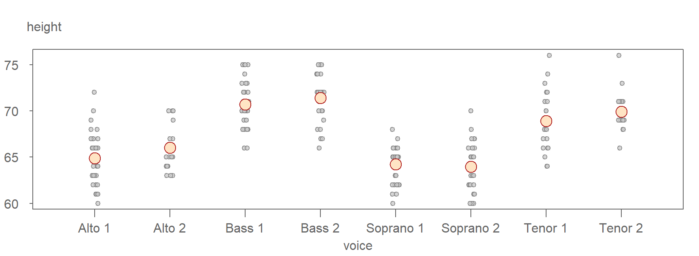
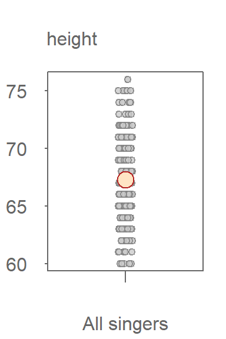
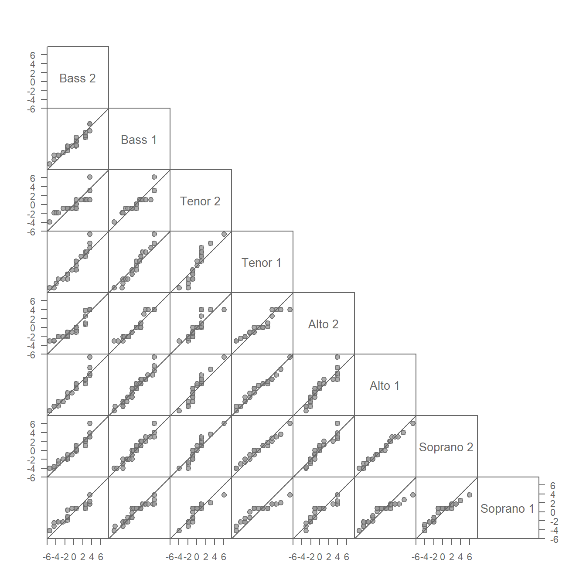
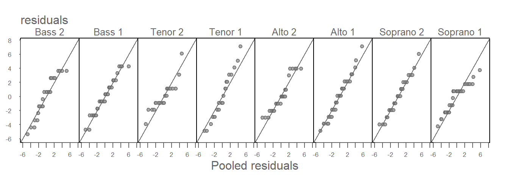
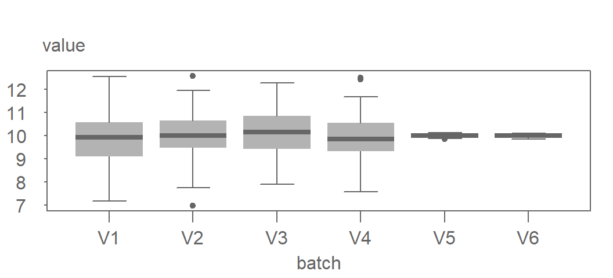
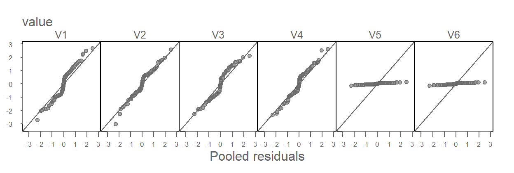
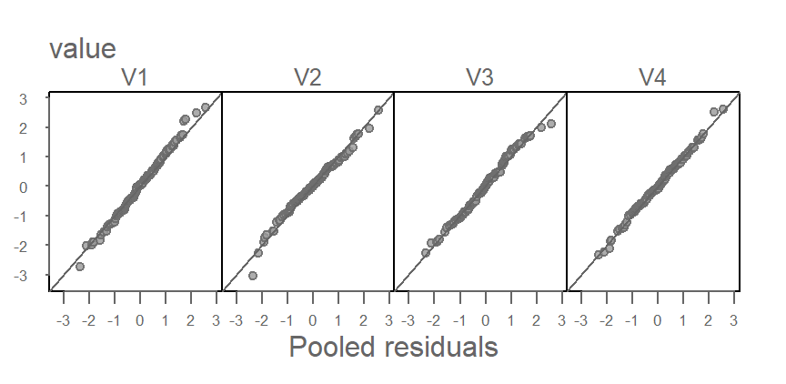
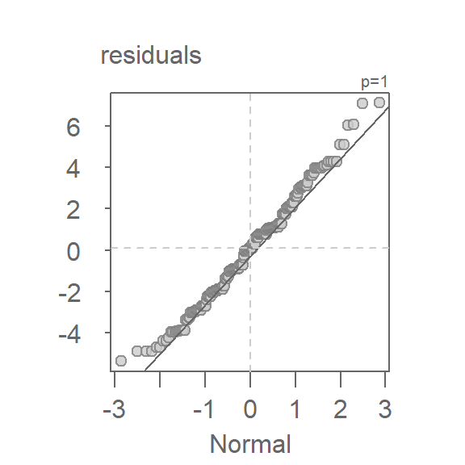

| dplyr | ggplot2 | lattice | tukeyedar |
|---|---|---|---|
| 1.1.4 | 3.5.1 | 0.22.6 | 0.4.0 |
19 Residuals
In the last two chapters, we explored plots that help characterize a variable’s distribution. In this section, we take a step further by fitting a simple model (the mean) to the data. Our focus then shifts to analyzing the residuals—variations in the data not explained by the fitted model.
This exercise has for objective to seek a simple mathematical model to characterize both the mean and residual of the data.
19.1 Fitting the data
Univariate data can be described by their location (a measure of centrality) and their spread. For instance, the singer height groups examined in previous chapters differ primarily in their location. To analyze this further, we will fit the group means for each voice part and examine the residuals within and between groups. This approach can be expressed mathematically as:
\[ Singer\ height = \mu_{voice\ part} + \epsilon \]
Here, \(\mu_{voice\ part}\) represents a measure of location (e.g. the mean) for each singer voice part group and \(\epsilon\) denotes the residual remaining after fitting \(\mu\). Notably, \(\epsilon\) is not conditioned on voice part in the expression. The assumption that the residuals follow a similar distribution across all groups facilitates our comparison of the modeled location and is a fundamental premise of many common statistical procedures.
The following is a jitter plot of the singer height values conditioned on voice parts with their respective \(\mu\) values symbolized using large bisque colored point symbols

The means clearly differ across the groups, but you’ll also notice that the range of singer heights tends to cluster around their respective group means. In other words, the range in height values is not consistent across all groups. For instance, Alto 2 singers have heights ranging from 63 to 70 inches, while the Bass 1 group spans from 66 to 75 inches. This range of around 10 inches seems consistent across all voice parts.
The variability in height values spanning each voice part mean height is the residual, \(\epsilon\), portion of the model.
This suggests that knowing a singer’s voice part can help us estimate their height with greater certainty. It represents an improvement over estimating height without accounting for voice part. In other words, if our model of singer height were limited to \(Singer\ height = \mu + \epsilon\) where \(\mu\) is no longer conditioned on voice part, our height estimates would include a wider range of uncertainty as can be seen in the following jitter plot where the voice part grouping variable has been removed.

Without knowing the singer’s voice part, our uncertainty in estimating a singer’s height value is much greater with a range covering 16 inches. The range of uncertainty in the height values when including the voice part information reduces our uncertainty by about four inches.
19.2 Comparing the residuals with QQ plots
Ensuring a consistent distribution of residuals across groups is critical. When residuals vary with the grouping variable, it complicates the mathematical characterization of the data. Thus, it is good practice to check that residual distributions are similar across all groups.
Residuals are computed by subtracting the group mean from each value within the group. For the singer height data, the residuals are expressed as:
\[ \epsilon_{voice\ part} = Singer\ height - \mu_{voice\ part} \] Here, the subscript \(_{voice\ part}\) indicates that the residuals are calculated separately for each group.
You can compute the residuals using the following dplyr operation however, instead of creating a new dataframe, we will add a residuals column to the existing dataframe. This can be accomplished by terminating the dplyr piping operation with the pull function.
library(dplyr)
df <- lattice::singer
df$residuals <- df %>%
group_by(voice.part) %>%
mutate(resid = height - mean(height)) %>%
pull(resid)A useful tool for comparing the residuals is the empirical QQ plot introduced in Chapter 17. Given that we are comparing multiple pairs of residuals, we’ll generate a QQ plot matrix of \(\epsilon_{voice\ part}\).
library(tukeyedar)
eda_qqmat(df, residuals, voice.part, text.size = 0.8, size = 0.8)
This QQ plot matrix looks similar to that generated for the singer height values in chapter 17 with the notable difference that each group’s location has been removed from its respective set of height values. This centers the height values on 0. In other words, the additive offset observed between singer groups in chapter 17 has been removed in the above plot.
The residuals, for the most part, appear similar across all voice parts. Recall that the stair-step patterns observed in the QQ plots are a result of the rounding of height values to the nearest inch and should not be conflated with a systematic deviation from the \(x=y\) line.
19.3 Comparing batches to pooled residuals
Using a QQ plot matrix to compare multiple batches of values can be challenging for datasets with a large number of groups. The number of QQ plots needed to compare all groups of values is \((groups * (groups - 1)) / 2\). In the singer height dataset, we generated 28 QQ plots for just eight group of singers.
If we start with the assumption that the spreads are homogeneous across the batches, we may choose to combine (pool) the residuals and compare the residuals of each group of singers to the pooled residuals. This limits the number of QQ plots to the number of groups in the dataset. This approach can also be advantageous when working with datasets with small number of observations in that we are increasing the size of the reference residual distribution thus reducing noise that results from a relatively small sample size. The pooled residuals QQ plot can be generated with the eda_qqpool function. The function takes the residual values as input (resid = FALSE), or it will calculate the residual values for you (resid = TRUE). Since we’ve alread computed the residuals, we’ll opt for the former option.
eda_qqpool(df, residuals, voice.part)
All eight batches seem to have similar spreads–consistent with our analysis of the residuals QQ plot matrix. This justifies our use of a homogeneous \(\epsilon\) in our mathematical characterization of the singer height dataset.
\[ Singer\ height = \mu_{voice\ part} + \epsilon \]
Had the residuals varied across all singer height values, we would be in a difficult position of assessing how much of the variability can be explained by just the fitted means.
19.3.1 What to expect if one or more of the batches have different spreads
The residual vs. pooled residual plots can be effective at identifying batches with different spreads. In the following example, we combine four simulated batches generated from an identical distribution (V1, V2, V3 and V4) with two simulated batches generated from a different distribution (V5 and V6). Their boxplots are shown next.

Now let’s take a look at the residual vs. pooled residual plots.

Batches V5 and V6 clearly stand out as having different distributions from the rest of the batches. But it’s also important to note that V5 and V6 contaminate the pooled residuals. This has the effect of nudging the other four batches away from the one-to-one line in a constant manner (i.e. their deviation from the \(x=y\) line is consistent across the four groups).
In the following figure, V5 and V6 are removed from the dataset and thus removed from the pooled residuals.

The tightness of points around the one-to-one line suggests nearly identical distributions between V1, V2, V3 and V4 as would be expected given that they were generated from the same underlying distribution.
This simulation illustrates how an anomalous set of groups can sometimes be identified in a pooled residuals QQ plot. However, this may not always be the case. The behavior of pooled residuals QQ plots in the presence of anomalous residuals is not well documented. Therefore, this technique should be applied with caution. Simulations like the one demonstrated here can provide valuable insights into how pooled residuals QQ plots behave under various distributional scenarios.
19.4 What do we gain with homogeneous residuals?
As mentioned at the outset of this chapter, homogeneity in the residuals offers several benefits. For one, it simplifies the mathematical characterization of the data by reducing \(\epsilon_{group}\) to a single constant \(\epsilon\) for all groups.
In our working example, we observed that singer heights share a consistent residual distribution across voice parts. This homogeneity allows measures of spread, such as the interquartile range (IQR), to be shared across all groups.
Another key advantage of shared residuals across groups is the ability to improve the precision of spread estimates, particularly for small datasets. Pooling residuals across groups increases statistical power by reducing the noise that might otherwise distort the spread estimate. For instance, calculating the IQR separately for each voice part may yield noisy results due to limited data, as shown here:
df %>%
group_by(voice.part) %>%
summarize(iqr = IQR(residuals))# A tibble: 8 × 2
voice.part iqr
<fct> <dbl>
1 Bass 2 4
2 Bass 1 3
3 Tenor 2 2
4 Tenor 1 5
5 Alto 2 3
6 Alto 1 3.5
7 Soprano 2 3.75
8 Soprano 1 2.25Since the residuals appear homogeneous across groups, we can pool them to calculate a single IQR for all singers, thereby reducing variability:
df %>%
summarize(iqr = IQR(residuals)) iqr
1 3.18681319.5 Comparing residuals to a unit Normal distribution
We learned in chapter 18 that the distribution of singer heights across voice parts closely resembles a Normal distribution. Given that residuals differ from the original data by a shift in location only, we expect them to follow a similar pattern. This can be verified by generating a Normal QQ plot using the pooled residuals:
eda_theo(df$residuals, ylab = "residuals")
The plot shows that the residuals follow a straight line for approximately 95% of the central values (within -2 to 2 standard deviations on the x-axis). This justifies modeling the residuals with a Normal distribution and, as such, supports the use of standard deviation as a measure of spread.